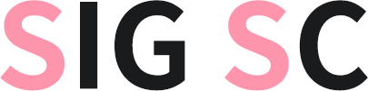

기존 회지
참가 신청
CREDIT
알림 사항
HISTORY
2016년 봄
- SIG SC 결성
2016년 8월
- Proceedings of SSCC 1st 발간, 제 8회 케이크스퀘어 참가
2017년 6월
- Proceedings of SSCC 1st 웹 공개
2017년 여름
- SSCC 2nd 참가자 모집
2017년 12월
(예정)
- Proceedings of SSCC 2nd 발간 및
제 11회 디.페스타 Day 1 참가 예정
2016년 봄
- SIG SC 결성
2016년 8월
- Proceedings of SSCC 1st 발간, 제 8회 케이크스퀘어 참가
2017년 6월
- Proceedings of SSCC 1st 웹 공개
2017년 여름
- SSCC 2nd 참가자 모집
2017년 12월
(예정)
- Proceedings of SSCC 2nd 발간 및
제 11회 디.페스타 Day 1 참가 예정
Contact
sigsubculture@gmail.com
SigSubCulture
Tweets by Twitter